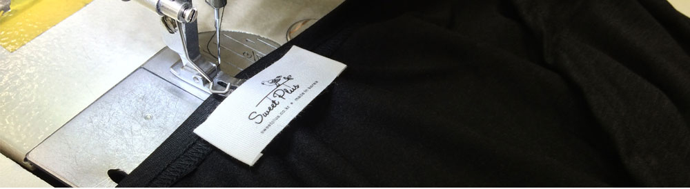
Maternity dress,
Sweetplus's the WHY?
妊婦服、どうしてスウィートプラスなのか？
スウィートプラスは2005年韓国で、マタニティーウェアの販売を始めて
今日まで大変多くの女性から支持されてきました。
このたび日本でサイトをオープンすることになり、
私たちが育てた素敵なブランドを日本の皆様に紹介することができて光栄です。
私たちは、皆様に満足頂ける製品を開発する為、
毎月1000以上のデザインサンプルを作り日々デザインの開発会議を行っています。
スウィートプラスは、トレンドの影響を受けないシンプルなデザインで
最上の品質にこだわった最高のマタニティーウェアを
皆様にお届けすることをお約束致します。
今日まで大変多くの女性から支持されてきました。
このたび日本でサイトをオープンすることになり、
私たちが育てた素敵なブランドを日本の皆様に紹介することができて光栄です。
私たちは、皆様に満足頂ける製品を開発する為、
毎月1000以上のデザインサンプルを作り日々デザインの開発会議を行っています。
スウィートプラスは、トレンドの影響を受けないシンプルなデザインで
最上の品質にこだわった最高のマタニティーウェアを
皆様にお届けすることをお約束致します。
愛らしい子供が生まれたら、
お肌に安全な妊婦服をお探しですか？
子供と産婦に刺激を与えない認証を得た生地
スウィートプラスは2014年から韓国で安全生地KC認証を受け始めました。
子供と産婦に刺激を与えない生地とそうではない生地を研究しています。
既存の安い生地は価格が安い分安全性は保証できませんでした。
子供の為に努力する会社、そのような会社になるために私達は努力しています。
KC認証を貰えなかった生地も直接見て、感じて判断しながら
良い品質の生地で妊婦服を製作しています。
"子供の肌に直接触れても大丈夫な妊婦服"
子供と産婦に刺激を与えない生地とそうではない生地を研究しています。
既存の安い生地は価格が安い分安全性は保証できませんでした。
子供の為に努力する会社、そのような会社になるために私達は努力しています。
KC認証を貰えなかった生地も直接見て、感じて判断しながら
良い品質の生地で妊婦服を製作しています。
"子供の肌に直接触れても大丈夫な妊婦服"
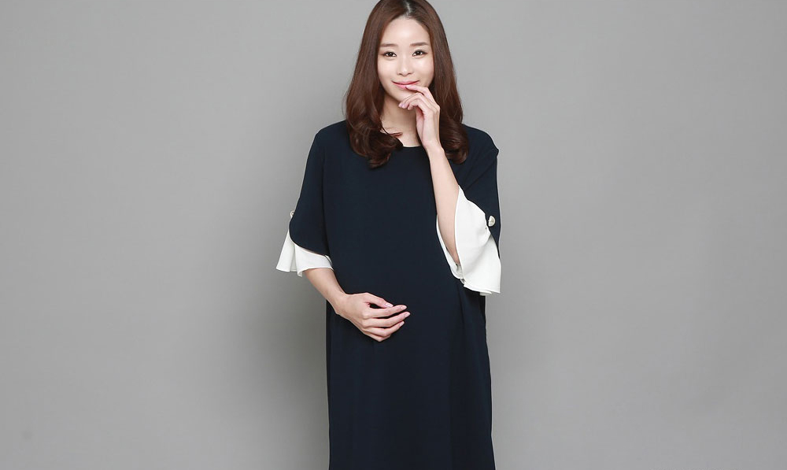
初めて着る授乳服、妊婦服
絶対に同じではありません。
着心地に妥協しないで下さい。
生まれて初めて着る妊婦服。 初めて着ると '元々こうなだ', '少し不便でも元々こうなんだ', '元々少し着心地が良くないもの' だと思われるかもしれません。 しかし!
妊婦服は全て同じではありません。仕立てから授乳口までひとつひとつ他とは違います。
1㎝差で授乳が楽になり、仕立てひとつで変わります。
そしていつもそう思っています。
"どうすればもっと楽に、長く着ることができるだろうか?"
妊婦服は全て同じではありません。仕立てから授乳口までひとつひとつ他とは違います。
1㎝差で授乳が楽になり、仕立てひとつで変わります。
そしていつもそう思っています。
"どうすればもっと楽に、長く着ることができるだろうか?"
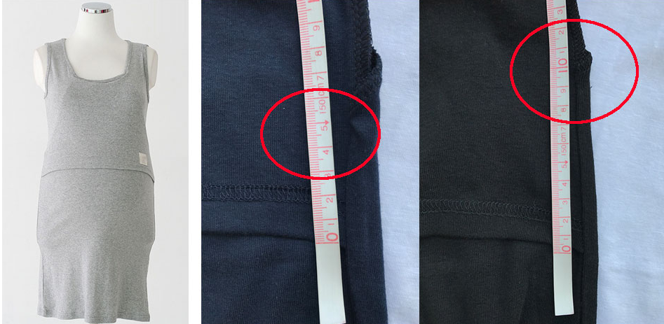
既存他社授乳タンクトップ / スウィートプラスシンプルマンゴー授乳タンク
同じようで違う2つの製品、違いが見て分かりますか?
授乳カバーの長さに違いがあります。
既存の他社授乳タンクは授乳カバーの長さが5㎝くらいですが、
授乳する時カバーを上げるとお肌が見えてしまいます。
しかし、スウィートプラスの授乳タンクトップは授乳カバーの長さが2倍の
10cmで上げてもお肌が見えないように施しています。
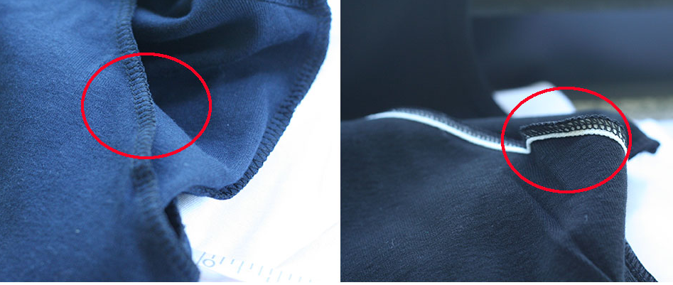
既存他社授乳タンクトップ / スウィートプラスシンプルマンゴー授乳タンク
授乳カバーの裏地を見てみましょう
全ての授乳服製品は伸びてしまいます。
既存の授乳タンクトップは洗濯を重ねると伸びてしまい着ることが出来なくなります。
なので長く着用できるようにと心がけて裁縫しています。
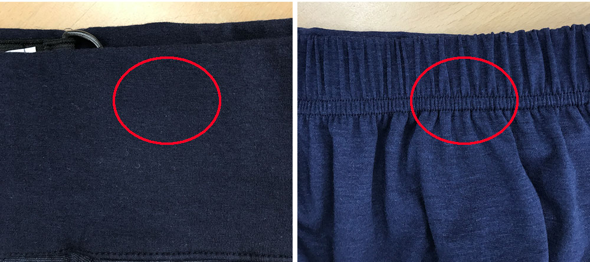
既存他社腰のゴム / スウィートプラス腰のゴム
腰をしっかり掴んで落ちないような妊婦服のズボンです。
普通一回の返し縫いや返し縫いをしなかったり, それではゴムが中で回ってしまったり伸びたりしてしまいます。
しかしスウィートプラスは2列の返し縫いをしているので伸びたりせず長く楽に着用することができます。
それ以外にもズボンとレギンスの段違い、オーバーオールや
ワンピースのサスペンダーの部分も見えない着やすさがあります。
また、妊婦服の前にあるプリントも有害物質が使われていません!
授乳製品は授乳カバーだけではなく所々多くの違いがあります。
同じようで同じじゃない妊婦服
"このような小さな違いが着心地のいい妊婦服を作り、それが顧客満足度にもつながると信じています。"
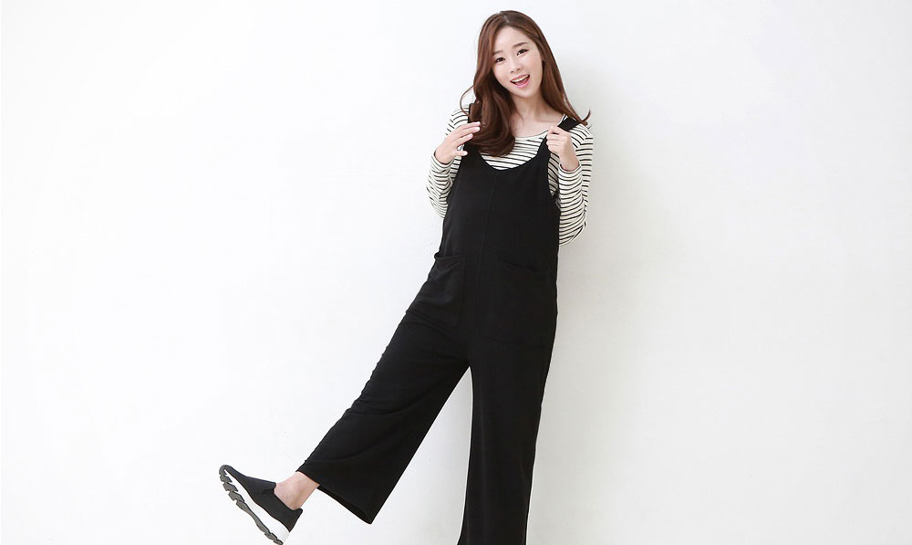
3回の検収で
信頼ある製品！
体系的なプロセスで皆様のもとへ
同じようで違う2つの製品、違いが見て分かりますか?
授乳カバーの長さに違いがあります。
既存の他社授乳タンクは授乳カバーの長さが5㎝くらいですが、
授乳する時カバーを上げるとお肌が見えてしまいます。
しかし、スウィートプラスの授乳タンクトップは授乳カバーの長さが2倍の
10cmで上げてもお肌が見えないように施しています。
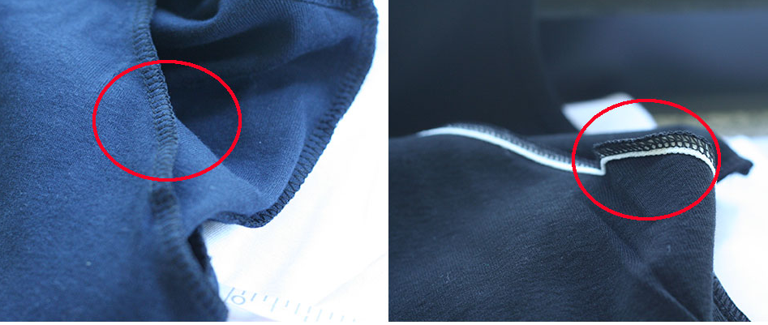
既存他社授乳タンクトップ / スウィートプラスシンプルマンゴー授乳タンク
授乳カバーの裏地を見てみましょう
全ての授乳服製品は伸びてしまいます。
既存の授乳タンクトップは洗濯を重ねると伸びてしまい着ることが出来なくなります。
なので長く着用できるようにと心がけて裁縫しています。
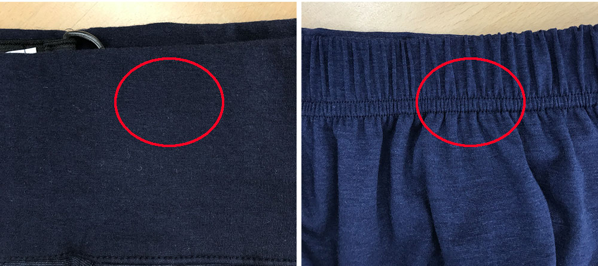
既存他社腰のゴム / スウィートプラス腰のゴム
腰をしっかり掴んで落ちないような妊婦服のズボンです。
普通一回の返し縫いや返し縫いをしなかったり, それではゴムが中で回ってしまったり伸びたりしてしまいます。
しかしスウィートプラスは2列の返し縫いをしているので伸びたりせず長く楽に着用することができます。
それ以外にもズボンとレギンスの段違い、オーバーオールや
ワンピースのサスペンダーの部分も見えない着やすさがあります。
また、妊婦服の前にあるプリントも有害物質が使われていません!
授乳製品は授乳カバーだけではなく所々多くの違いがあります。
同じようで同じじゃない妊婦服
"このような小さな違いが着心地のいい妊婦服を作り、それが顧客満足度にもつながると信じています。"
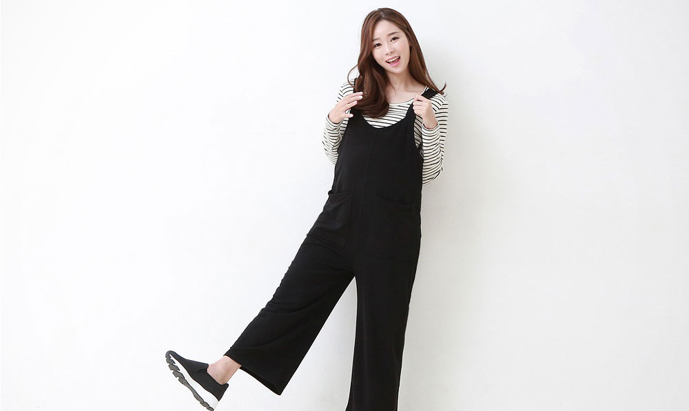
3回の検収で
信頼ある製品！
体系的なプロセスで皆様のもとへ
2005年から今まで2万着超える製品と65万着の販売で作られたノウハウを元に妊婦服製作しています。生地の選択からパターンデザイン、生産工程まですべて管理して、二重三重の品質管理で高クオリティの服を合理的な価格で販売しています。
"生地の入荷から配送まで信頼できる製品だけを追求します。"
"生地の入荷から配送まで信頼できる製品だけを追求します。"
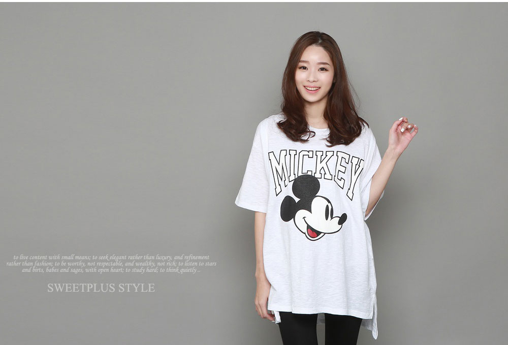
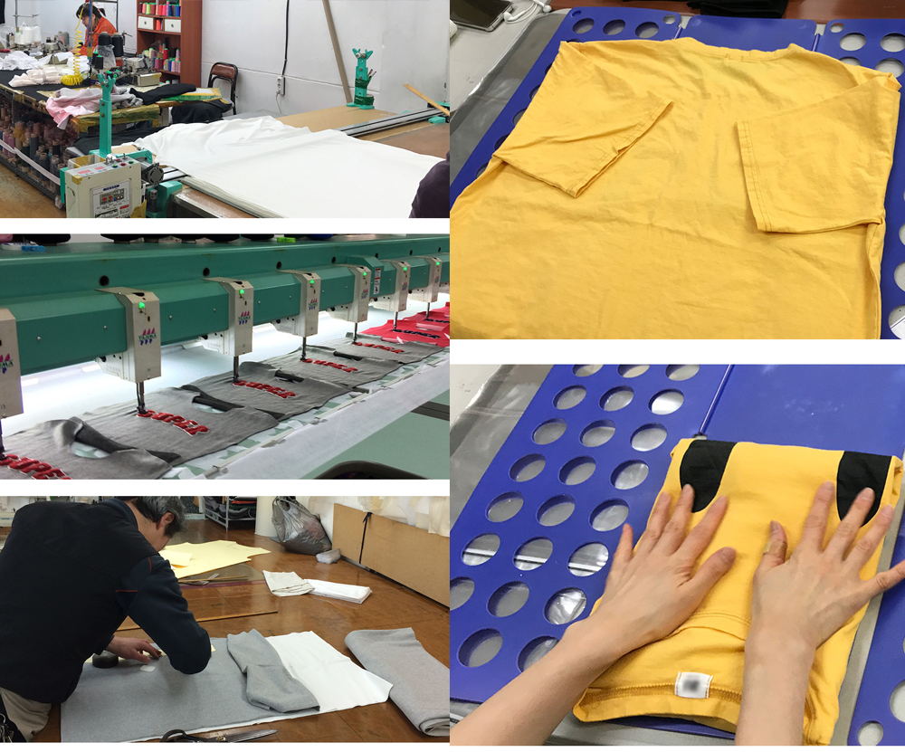
あなたが幸せだということが
真の胎教です。
あなたが笑うことが生まれてくる子供の幸せです。
あなたが笑うと真の胎教になり
生まれてきた子供にはそれがまさに幸せで
家族にとってそれが愛です。
あなたが常に笑って過ごせますように
SWEET PLUS
生まれてきた子供にはそれがまさに幸せで
家族にとってそれが愛です。
あなたが常に笑って過ごせますように
SWEET PLUS
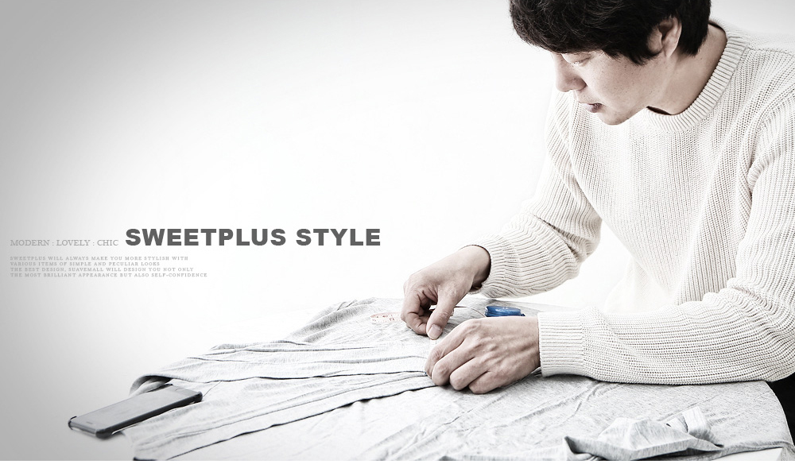